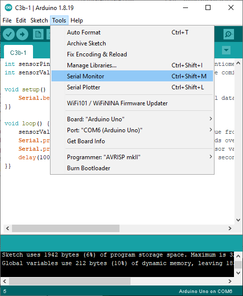

C5 — Analogue inputs
 Level 1 — Numbers from an analogue input
Level 1 — Numbers from an analogue input
Complete the challenge
int sensorPin = A5; // the input pin for the potentiometer on the ThinkerShield
int sensorValue = 0; // variable to store the value coming from the sensor
void setup() {
Serial.begin(9600); // Set up serial data communication
}
void loop() {
sensorValue = analogRead(sensorPin); // read the value from the sensor
Serial.print("The sensor value is: "); // send the words over the serial data connection
Serial.println(sensorValue); // send the sensor value over the serial data connection
delay(100); // wait for 0.1 seconds so that we only send the sensor value back 10 times a second.
}
